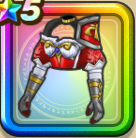

紅蓮の法衣上
攻略班 7.5点 / ジバリア属性耐性+5%ドルマ属性耐性+5%ジバリア属性耐性+5%ヒャド属性耐性+5%【魔法戦士】ギラ属性ダメージ+2%ギラ属性じゅもんダメージ+5%
くわしい特徴
【レベル別習得スキル】 Lv1ジバリア属性耐性+5% Lv8すばやさ+5 Lv10ドルマ属性耐性+5% Lv12【魔法戦士】ギラ属性ダメージ+2% Lv15ギラ属性じゅもんダメージ+5% Lv18ジバリア属性耐性+5% Lv20【魔法戦士】さいだいHP+5 Lv23守備力+7 Lv25ヒャド属性耐性+5% 【限界突破スキル】 1凸こうげき魔力+5 2凸すばやさ+7 3凸守備力+5 4凸さいだいMP+10